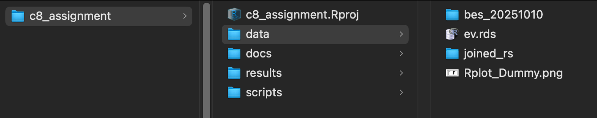

Class 8 Assignment: Evictions & Rent-Stabilization in NYC — EDA + Mapping
Fall 2025 | Instructor: Stephen Metts | PGUD 5160 - CRN 2247
Preamble
In this eighth week’s assignment, we will build on the Class 8 Lab tidyverse EDAs to include both mapping and a slightly different approach to rent stabilized units where the BIN from the evictions data is tied directly to BINs in the building centroids data that we used previously in Class 7 to map building permits.
This week, like the lab, we are exploring the executed evictions in NYC and their relationship to rent-stabilized parcels. We first explore the full time series and neighborhood patterns of evictions (Part I), then integrate building BINs and rent-stabilized (RS) parcel context for deeper building-level insights (Part II).
As noted in Class 8 Lab, we can also integrate some of the EDA plotting results as image files (.png) into the Class 8 Assignment .Rmd for further context.
Follow the steps below: first orient to this week’s materials, then work through Parts I and II; further consider integration of the Class 8 lab plots The assignment deliverable will be submitted as an .html or .pdf rendered from your .Rmd.
Due Thursday 10/23/25 at 11:59pm.
Week 8 Materials
- Class 8 Agenda
- Class 8 Lecture Slides
- Class 8 lab
- Class 8 Assignment - This Document
- Class 8 Assignment Script #1
- Class 8 Assignment Script #2
- Class 8 Lab Script #1
- Class 8 Assignment .Rmd ‘starter file’
- [Class 8 Assignment ]
As we have done for past assignments, Create an R Project pointing at your assignment_8 folder with subdirectories: /data, /scripts, /docs, /results. Confirm your working directory with getwd() and list files via list.files(recursive = TRUE) as needed.
Week 8 Assignment Data
Like Lab 8, we will download the starter data, uncompress it and place into the /data directory. Make sure to alter your paths in the assignment scripts as needed.

/data structureNote that there is a file Rplot_Dummy.png. This file is called into the starter .Rmd as an example of pulling a plot export as .png; you can use this format for inputting all your plots and maps for this week’s assignment. This is different than how we’ve called objects into .Rmd in past assignments. This is an easier process to just input the .png results from your main working scripts.
Week 8 Reading
Next week’s quiz 8 will feature 5 multiple choice questions, and 5 True or False questions on the following online, accessible article:
This week’s assignment uses both spatial and non-spatial tied primarily to the tidyverse package, with spatial operations handled by the sf package. In review of the input data sources, we know that we have both evictions data, ‘likely’ rent stablized parcels and the building centroids data set from NYC Planning. This week’s reading addresses these units - both evictions data and rent stabilized properties - as it contextualizes larger trends regarding housing both in NYC and NYS. Pay attention to the following concept and themes from the reading:
- NYC eviction filings have a defined trend that we see both in our analyses as well as the reading.
- Court-ordered evictions are not necessarily executed evictions; understand the difference between each.
- As we see in our analyses, risk in NYC is not distributed evenly. this is a theme in the reading also.
- The reading also addresses issues outside NYC across the state; understand the trends across both geographic scales.
At 7am Friday, October 24th, the eighth weekly quiz will open in Canvas. Utilize the posted Class 9 Agenda to gain the quiz access code which will be posted towards the beginning of the agenda. Expect 10 questions in total that cover the reading above.
Assignment Overview
We will produce an exploratory analysis and three sets of visuals:
- Part I: Citywide evictions EDA (monthly trend, top NTAs) + interactive leaflet hex map.
- Part II: Building-level joins by BIN and RS parcel context (top 25 buildings overall vs. inside RS).
- Part III: Your choice of selected
tidyverseEDA experiment results (plots exported as .png).
Utilize the Class 8 Assignment .Rmd ‘starter file’ for the development of your write-up, static plots from Parts I-III (including screentshot(s) from the interactive leaflet map).
Part I — Citywide EDA + Leaflet Hex Map
Goal. Clean and summarize executed evictions citywide; build a performatted, aggregated web map using hex bins.
Step 1 — Data
- Input: an evictions
.rdsthat includesExecuted Dateand latitude/longitude fields. - Load the
.rds; parseExecuted Dateto Date (mm/dd/yyyy), filter NA dates.
Step 2 — Time-Series EDA
- Create a monthly series of executed evictions (
floor_dateto month,countby month). - Plot: line chart of evictions per month (full span). Briefly describe any patterns.
Step 3 — Neighborhood EDA (NTA)
- Aggregate evictions by NTA; sort descending and display Top 25 in a horizontal bar chart.
- Use
forcats::fct_reorder()to order bars by count; label withscales::comma().
Step 4 — Leaflet Hex Map
- QC latitude/longitude to a NYC bounding box; drop
(0, 0)and outliers. - Convert to
sf(WGS84), reproject to EPSG:3857. - Build a hex grid over a buffered convex hull of points (e.g., 600 m cells).
- Join points to hexes (e.g.,
st_within); count evictions per hex. - Drop zero-count hexes for clarity/performance.
- Compute legend bins via Fisher–Jenks (fallback to quantile).
- Map with leaflet: base tiles, hex polygons (fill by
evictions_sum), legend; overlay RS outline to see the relationship with parcels that feature at least one building with rent stabilized units.
Part I Deliverables
- Time-series plot image.
- Top-25 NTA bar chart image.
- Interactive leaflet map (screenshot(s) acceptable).
Part II — BIN Joins & RS Parcel Context
Goal. Join evictions to building centroids via BIN; flag whether buildings fall inside rent-stabilized (RS) parcels; compare the Top 25 buildings overall vs. inside RS.
This is a slightly different process than using the BBL alone as we did in Class 8 Lab. Here we revert back to Class 7 building centroids used for the building permits to drop atop ‘likely’ rent stabilized (rs) parcels and flag them either outside or inside these parcels. That allows for the comparison between ‘all’ buildings and ‘rs’ buildings via the ‘top 25’ comparison.
Step 1 — Inputs
- Building centroids shapefile (EPSG:2263) with
BINfield. - RS parcels shapefile (EPSG:2263).
- The same evictions
.rdsused in Part I (must include a BIN-like field:BIN/bin/building_identification_number).
Step 2 — BIN Normalization
- Normalize BIN values to digit-only character strings (avoid scientific notation and punctuation).
- Remove known bogus BINs (e.g.,
1000000,2000000,3000000,4000000).
Step 3 — Eviction Counts by BIN
- Count evictions per BIN into a table:
bin,evictions_total.
Step 4 — Join to Centroids
- Read centroids; standardize BIN to digits; select
(bin, geometry);st_transformto 2263. left_join()eviction counts bybin;coalescemissing to zero (evictions_total = 0when no match).
Step 5 — RS Spatial Flag
- Read RS parcels;
st_make_valid(),st_transform(2263). - For each centroid, compute
in_rs_parcel = lengths(st_intersects(centroid, rs_parcels)) > 0.
Step 6 — Top-25 Tables
- Top 25 overall (
evictions_total > 0, sort descending). - Top 25 inside RS (
in_rs_parcel == TRUE & evictions_total > 0, sort descending).
Step 7 — Comparative Plots
- Build two horizontal bar charts (
x = evictions_total,y = BIN). - In the RS-only chart, color BINs black if they also appear in the overall top-25; grey otherwise.
- Use patchwork to combine the two panels side-by-side; sync x-limits with
coord_cartesian()to ensure fair comparison.
Part II Deliverables
- Top-25 combined chart (
.pngrecommended). - Make sure to include in your discussion section an anlysis of the overlap pattern between the “ALL” and “INSIDE RS” top-25 lists.
Quality Assurance (Suggested)
- Print
head()of key objects after joins (e.g., eviction counts by month; hex_counts summary; top_buildings tables). Make sure you understand what each code chunk produces before moving to the next code section towards the final plot sections.
Submission Notes
- Submit an HTML or PDF produced from your Assignment 8
.qmd(use starter - Class 8 Assignment .Rmd ‘starter file’). - Include the plots and a short narrative answering:
- What temporal pattern(s) stand out in the monthly time series (the full data set, unlike the 52 weeks subset of the lab)?
- Which NTAs dominate, and why might that be? How is this different/similar when reviewing the leaflet map that does not include the NTA geographies?
- What spatial clustering is visible in the hex map?
- How do the top-25 buildings overall compare to those inside RS parcels?
Saving, Plotting and Screengrabs
- Save final plots or objects you want to re-use into
/results(e.g.,saveRDS()orggsave()). - Use the plots window export options to save plot results (
.png) and easily import into the submission.Rmd. - Like assignent 7, consider either one or a series of leaflet map
.pngexports (in assignment 7, we usedtmap;leafletwill behave in a similar manner).
References
Timeline & Deliverables
- Due: (October 23rd, 2015 - 11:59pm )
- Deliverables: rendered
.htmlor.pdf; hold onto your.qmdin the project folder (do not remove after rendering).